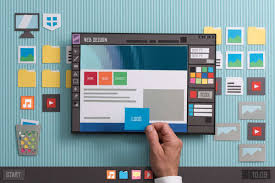
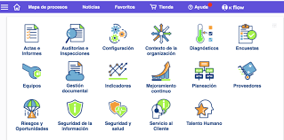

| Tipos principales de sistemas de gestión en aplicaciones web |
- CMS (Content Management System)
- ERP (Enterprise Resource Planning)
- CRM (Customer Relationship Management)
- ERP (LMS (Learning Management System))
- CRM (DAM (Digital Asset Management)
|
|
| Características comunes |
- Interfaz accesible desde navegador.
- Gestión de usuarios y roles.
- Integración con bases de datos.
|

|
| Ejemplo práctico |
- CMS (WordPress + WooCommerce) para gestionar productos y contenido.
- CRM (HubSpot) para manejar clientes y campañas.
- ERP (Odoo) para controlar inventario y facturación.
|

|